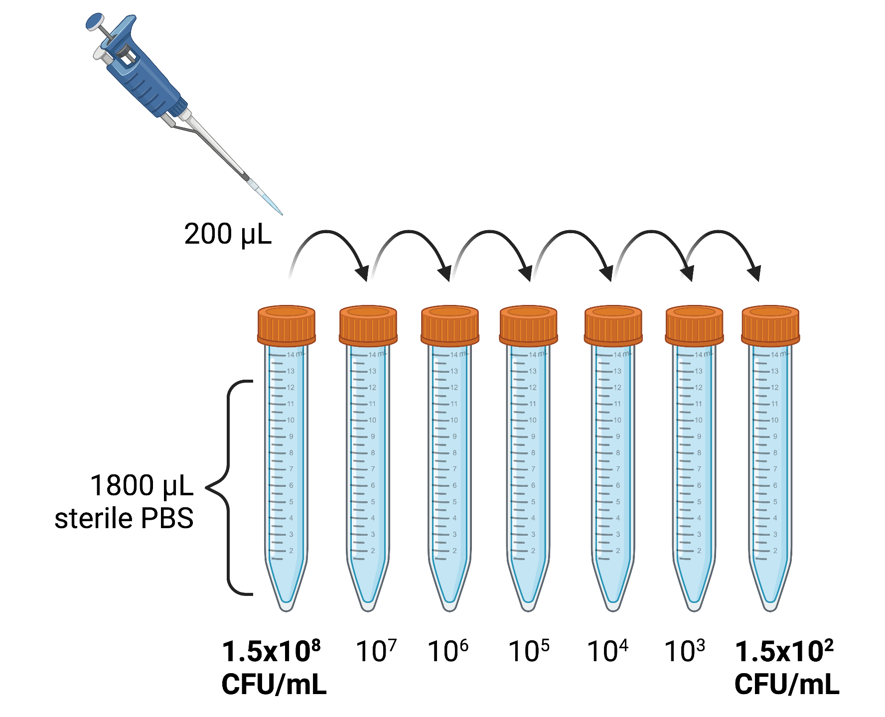

Protocols
Workpackage 1
Materials
sterile 15 ml falcon tube
glass tubes
tube racks
DensiCHEK plus Biomerieux
Vortex
100-1000 mcl mechanical pipette
1 ml sterile insulin syringe
serum from healthy volunteers
saline sterile solution
MH broth
BacT/ALERT FA FAN® Aerobic Biomeriuex blood culture bottles
BacT/ALERT SA Standard Aerobic Biomerieux blood culture bottles (without inactivating matrix)
Bact/ALERT 3D Biomerieux incubator system
Test isolates
Bacterial strains were obtained from the banked collection of the Microbiology Unit, Hub Laboratory, AUSL Romagna, Cesena, Italy.
Each day before testing, strains are thawed and incubated at 37°C for 18-24 hours.
| Isolate | Abbreviation | Enzyme | Source | Ceftazidime/Avibactam MIC (mg/L) | Gentamicin | Meropenem | Meropenem-Vaborbactam | Colistin |
|---|---|---|---|---|---|---|---|---|
| Klebsiella pneumoniae ESBL ATCC 700603 | KP_ATCC | bla SHV-18 | Reference strain | MIC needed | ||||
| Klebsiella pneumoniae KPC- A | KPC_A | KPC-3 | Clinical isolate | 2 | ||||
| Klebsiella pneumoniae KPC- B | KPC_B | KPC-3 | Clinical isolate | 1 | ||||
| Klebsiella pneumoniae KPC- C | KPC_C | KPC-3 | Clinical isolate | |||||
| Klebsiella pneumoniae NDM | NDM | NDM-2 | Clinical isolate | >256 | ||||
| Klebsiella pneumonia VIM | VIM | VIM | Clinical isolate | >256 |
MICs were performed and confirmed by Etest
Inoculum preparation
The proposed method are a modification of Tpos assay as proposed by Kaltsas et al.
Dilution schemes are from the Clinical Laboratory Standards Institute (CLSI) M21-A Methodology for the Serum Bactericidal Test and M26A Methodology for Determining Bactericidal Activity of Antibiotics.
To prepare a standardized inoculum (1.5 x102 CFU/mL) for injection in blood culture bottles:
Colonies are selected from an 18- to 24-hour agar plate and suspended in sterile 0.9% phosphate buffered saline (PBS) in a glass test tube. The suspension is then adjusted by optimal density using a Densichek turbidity meter to an equivalent to a 0.5 McFarland standard corresponding to 1 to 2 × 108 CFU/mL.
The inoculum is then serially diluted using ten-fold dilution scheme: 200 μL inoculum dispensed by micropipette into 1800 μL 0.9% saline → vortexed → then 200 μL of this suspension is pipetted into a fresh tube containing 1800 μL 0.9% saline, etc.) until a final inoculum of 1.5 x102 CFU/ml is reached.

Note the final dilution step is repeated an additional 5 times in replicate tubes to ensure 6 tubes (12 mL of the final 1.5 x102 CFU/mL) are available to inoculate 10 blood culture bottles.
Antibiotic preparation
Analytical grade (> 99% pure) ceftazidime (200 μg/mL) and avibactam (500 μg/mL) pure powder are diluted separately in sterile water to prepare a stock solution of ceftazidime (200 μg/mL) and avibactam (500 μg/mL). The stock solution is dispensed into 2 mL sterile cryo-vials and stored at -20°C.
Frozen stock antibiotic solution in cryo-vials is thawed the day of the experiment and diluted at twice the final test concentration using either (a) pooled patient serum; or (b) 0.9% PBS.
Example: to obtain 2 mL of 20 mcg/ml stock: 200 μL of ceftazidime 200 mg/mL solution is pipetted into a test-tube containing 1800 μL of serum
Example to obtain 50 μg/mL: using the multipipettor set at 500 μL, 500 μL of ceftazidime 200 μg/ml solution are added in a tube containing 1500 μL of serum
500 μL of the ceftazidime 2x concentration and 500 μL of the 2x avibactam concentration are then added in a test tube to obtain 1 ml of serum-antibiotic solution at the desired concentrations
After vortexing for 7-10 seconds each tube, 1 ml of inoculum suspension at 1.5x102 CFU/mL and 1 mL of antibiotic containing serum are inoculated with a sterile insulin syringe into a blood culture bottle containing 40 mL of enrichment broth without inactivating matrix.
Bloodculture bottles are then incubated into Bact/ALERT system to detect growth. The same procedure is repeated for all the selected antibiotic concentration-inoculum pairs.
One bottle is inoculated with the bacterial inoculum without adding the antibiotic solution (drug-free control).
describe incubation conditions, incubator settings, etc.
how are data collected from the software etc.